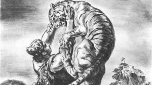
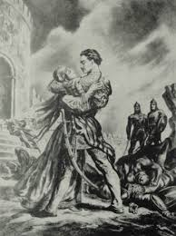

ვეფხისტყაოსანი — XII საუკუნის ქართველი პოეტის, შოთა რუსთაველის ჩვენამდე მოღწეული ერთადერთი პოემა. შედგება პროლოგის, ძირითადი ნაწილისა და ეპილოგისაგან. შინაარსის მხრივ, ვეფხისტყაოსანი რთული ნაწარმოებია; აქ ორი პარალელური ამბავია მოთხრობილი — არაბეთისა და ინდოეთისა, თუმცა ორივე მათგანი ერთმანეთთან სიუჟეტურად დაკავშირებულია. პოემა მდიდარია პერსონაჟებით. დაწერილია შაირის სტილში, თექვსმეტმარცვლიანი საზომით. დღემდე მოღწეული არაა ტექსტის პირვანდელი ვარიანტი; უძველესი ხელნაწერი, რომელიც დღეისათვისაა ცნობილი, XVI საუკუნით თარიღდება. საუკუნეების განმავლობაში პოემის ტექსტი იცვლებოდა, ინტერპოლატორების (ყალბისმქნელების) მიერ ხშირად ემატებოდა ახალი სტროფები, ზოგჯერ კი მთელი თავებიც; დღეს პოემის ეს დამატებული თავები „ვეფხისტყაოსნის გაგრძელებების“ სახელითაა ცნობილი. დღემდე მოღწეულია ვეფხისტყაოსნის 160-ზე მეტი ხელნაწერი წიგნი. ბეჭდურად პოემა პირველად 1712 წელს ვახტანგ VI-ის მიერ გამოიცა. ვეფხისტყაოსნის ზოგიერთი ხელნაწერი ნუსხა გაფორმებულია მდიდრული ორნამენტებითა და მინიატიურებით. სხვადასხვა მხატვრის მიერ შექმნილია ილუსტრაციები. პოემა გადათარგმნილია მსოფლიოს მრავალ ენაზე. შუა საუკუნეებშიც და შემდეგ დროშიც ვეფხისტყაოსანი დიდ როლს ასრულებდა ქართველი ერის, განსაკუთრებით კი ქართული ლიტერატურის თვითმყოფადობის საკითხებში; ვეფხისტყაოსანი ქართველთათვის ერთ-ერთ საყვარელ წიგნად რჩებოდა. მისი გავლენა კიდევ უფრო მეტად გაიზარდა ახალი დროის ქართველ მწერლებში. დღეს ვეფხისტყაოსანი მსოფლიო ლიტერატურის ერთ-ერთ შედევრად ითვლება.
შოთა რუსთაველი, რუსთველი (*დაახ. 1160/65 – ? ) — XII საუკუნის დიდი ქართველი პოეტი და მოაზროვნე, ავტორი საქვეყნოდ ცნობილი პოემისა „ვეფხისტყაოსანი“. მსოფლიოს მრავალ ლიტერატურათმცოდნეთა მიერ მიიჩნევა შუასაუკუნეების მსოფლიო ლიტერატურის ერთ-ერთ უმნიშვნელოვანეს წარმომადგენლად
შოთა რუსთაველის ცხოვრებისა და მოღვაწეობის შესახებ ჩვენამდე თითქმის არავითარ ცნობას არ მოუღწევია. რიგი ისტორიული, ლიტერატურული და ფოლკლორული წყაროების საფუძველზე იქმნება დიდი პოეტის ცხოვრებისა და მოღვაწეობის არაერთი ვერსია. რუსთაველის ბიოგრაფიული მონაცემების დასადგენად ერთ-ერთი ძირითადი წყარო თვით მისი პოემაა. რუსთაველის ავტორობას გვიმოწმებს „ვეფხისტყაოსნის“ პროლოგი („დავჯდე, რუსთველმან გავლექსე, მისთვის გულ-ლახვარსობილი“, „მე, რუსთველი, ხელობითა ვიქმ საქმესა ამა დარი“), ეპილოგი, აგრეთვე XV-XVIII საუკუნეების ქართული მწერლობა (ამაზე ადრინდელი ცნობები არ მოგვეპოვება). სახელწოდება რუსთაველი (რუსთველი) უკავშირდება გეოგრაფიულ პუნქტს რუსთავს და ნიშნავს რუსთავის მკვიდრს ან რუსთავის ციხე-ქალაქის გამგებელს, მეპატრონეს. იმდროინდელი საქართველოს სოციალურ-პოლიტიკური სინამდვილე გვაფიქრებინებს, რომ მეორე მნიშვნელობა უნდა იყოს სწორი. რუსთაველის სახელის შესახებ პირდაპირ ცნობას გვაწვდიან თეიმურაზ I (იგი „ვეფხისტყაოსნის“ პერსონაჟთა შესახებ ამბობს: „ესენი შოთა რუსთველმან შეამკო არსთა მკობითაო“) და XVII-XVIII საუკუნეებში სხვა ქართველი მწერლები. ამასვე ადასტურებს რუსთაველის ფრესკული პორტრეტი XIII საუკუნის I ნახევრის წარწერით, რომელიც რესტავრირებული სახითაა შემონახული იერუსალიმის ჯვრის მონასტრის სვეტზე (ტ. გაბაშვილის მიერ 1757-1758 ნანახი და შემდეგში ზეთის საღებავების სქელი ფენით დაფარული ფრესკა გამოავლინა იერუსალიმის სამეცნიერო ექსპედიციამ) და ამავე საუკუნეში მონასტრის სააღაპო წიგნში მოსახსენებელი „შოთაჲსა ჲ“, რომელიც იგივე რუსთაველი უნდა იყოს. ფრესკის წარწერის მიხედვით, რუსთაველს შეუკეთებია და განუახლებია ჯვრის მონასტერი.
ტარიელი — უცხო მოყმე, ვეფხისტყაოსანი, ნესტანის მიჯნური, ავთანდილისა და ფრიდონის ძმადნაფიცი; ავთანდილი — არაბეთის სპასპეტი, თინათინის მიჯნური, ტარიელისა და ფრიდონის ძმადნაფიცი; ნურადინ-ფრიდონი — მულღაზანზარის მეფე, ტარიელისა და ავთანდილის ძმადნაფიცი; ნესტან-დარეჯანი — ტარიელის მიჯნური, ფარსადანის ქალიშვილი; თინათინი — ავთანდილის მიჯნური, როსტევანის ქალიშვილი და თანამესაყდრე; როსტევანი — არაბეთის მეფე; ფარსადანი — ინდოეთის მეფე; დავარი — ფარსადანის და, ქაჯეთში გათხოვილი, ნესტან-დარეჯანის გამზრდელი და მასწავლებელი; შერმადინი — ავთანდილის ერთგული მსახური; სოგრატი - როსტევანის ვაზირი; ასმათი — ნესტან-დარეჯანის მონა-მსახური, ტარიელის მსახური და მეგობარი; რამაზი — ხატაეთის მეფე; უსენი — გულანშაროს მთავარი; ფატმანი — უსენის ცოლი; ჭაშნაგირი — ფატმანის საყვარელი; მელიქ–სურხავი — გულანშაროს მეფე; უსამი — ვაჭრების მეთაური.
ვეფხისტყაოსანი სამი ნაწილისაგან შედგება: პროლოგი (შესავალი), მთავარი ამბავი და ეპილოგი (დასასრული).
ვეფხისტყაოსნის პროლოგი და ეპილოგი გარკვეულ ცნობებს იძლევა პოემის ისტორიულ-ლიტერატურული საკითხებისა და თავად ავტორის შეხედულებების შესახებ. ზოგიერთი მოსაზრებით პროლოგი ეპილოგთან ერთად გვიანი ხანის დამატებაა და არ ეკუთვნის პოემის ძირითადი ნაწილის ავტორს; სხვა მოსაზრებით კი პროლოგსა და ეპილოგში მხოლოდ რამდენიმე სტროფია შემდეგ დამატებული, ძირითადი ნაწილი კი შოთა რუსთაველს ეკუთვნის. ამ უკანასკნელ მოსაზრებას იცავს რუსთველოლოგი ალექსანდრე სარაჯიშვილი, რომელიც ყალბად აცხადებს პროლოგის რიგ სტროფებს, თუმცა იქვე აღნიშნავს, რომ პროლოგი ვეფხისტყაოსნის ღირსებაა და მასში შოთა რუსთაველმა მოკლედ გადმოსცა პოემის მთავარი სათქმელი
ვეფხისტყაოსნის ძირითადი ნაწილი წარმოადგენს შედარებით მარტივ ფაბულურ ამბავს, რომელიც სიუჟეტური წყობითაა გართულებული. ძირითად ნაწილში ორი ამბავია მოთხრობილი, არაბეთისა და ინდოეთისა. ეს ორი ამბავი ერთმანეთთან მჭიდროდაა დაკავშირებული და გადახლართული, იმგვარად, რომ სიუჟეტურად ვეფხისტყაოსანი მაინც ერთიანი ნაწარმოებია. პოემის ძირითადი სიუჟეტური ამბავი გამდიდრებულია შემავალი ეპიზოდებით; ასეთებია, მაგალითად, ნადირობა, ფრიდონის ამბავი, ფატმანის ამბავი. ეს შემავალი ეპიზოდები თავის მხრივ მცირედ დასრულებული, სიუჟეტური ამბებია. გარდა ამ ამბებისა, ვეფხისტყაოსნის ძირითად ნაწილში ხშირია ე. წ. სტატიკური ელემენტები, როგორიცაა ანდერძები, ეპისტოლეები, დიალოგები, აღწერილობები, ლირიკული გადახვევები, აფორიზმები და სხვა
 